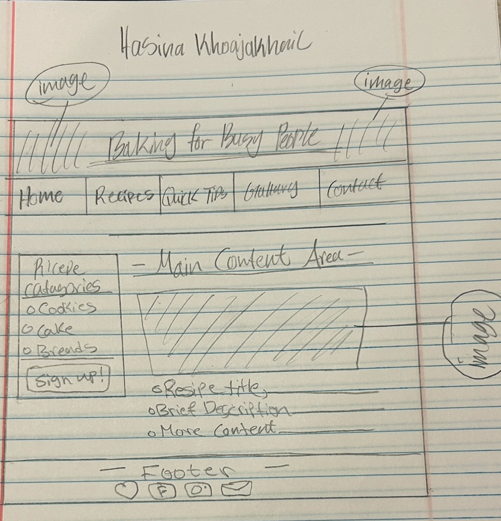

Project Overview
Project Name
Hasina’s Baking Haven
Audience
Beginner bakers, students, and anyone who enjoys cozy, aesthetic baking content.
Purpose
To share simple, beautiful baking recipes and create a warm, inviting space for creativity.
Personality
Soft, cozy, warm, friendly, pink, cottagecore-inspired.
Comparable Sites
- Sally’s Baking Addiction
- Minimalist Baker
- Tasty
Features & Content
- Home Page with site purpose
- About Page with personal baking story
- Recipes Page with aesthetic recipe cards
- Tips Page with helpful baking advice
- Gallery Page with curated baking images
- Contact Page with a working contact form
- Interactive hover effects
- Soft pink color palette
Color Palette
#f7dce5 — Soft Pink
#e8b7c8 — Rose Pink
#8b5e3c — Cozy Brown
#fff7f2 — Cream
Styling Descriptions
Overall Page
Soft cream background, centered content, rounded corners, warm brown text.
Header
Soft pink background, centered title, cozy aesthetic.
Navigation
Rose pink bar with evenly spaced links, hover effects that scale and lighten.
Main
White content box with rounded corners and soft shadow.
Footer
Soft pink background with centered text.
Forms (Contact Page)
Rounded input fields, soft borders, pink submit button with hover effect.
Recipe Cards
Soft pink borders, hover lift effect, centered images with alt text.
Layout Sketch

Image Licensing
- Cupcakes Image — Unsplash
License: https://unsplash.com/license - Cookies Image — Unsplash
License: https://unsplash.com/license - Strawberry Cake Image — Unsplash
License: https://unsplash.com/license
QAA Improvements
1. Added descriptive alt text to all images
All images now include descriptive alt text so screen readers can describe visuals to users with visual impairments.
2. Increased color contrast for readability
Colors were adjusted to meet accessibility contrast standards, improving readability for all users.
3. Improved page titles and heading structure
Page titles were updated to be more descriptive, and heading levels were corrected to follow semantic order.
4. Added a fully accessible contact form
The contact page now includes a working form with labels, required fields, and proper semantic structure.
5. Updated navigation across all pages
All pages now use the same navigation bar with consistent links and styling.